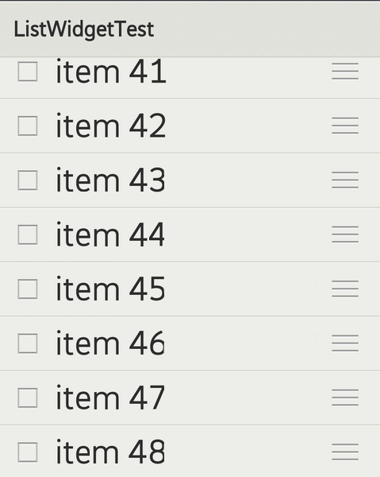

ListWidget creates a list of items which is scrollable, touchable. The list items are providered by item provider. Developer has to bind list item to item provider.
This tutorial will introduce how to use ListWidget. You will create a scrollable name list which is read from a string array.

Vector *pStrings = new Vector();
pStrings->append(new String("Mauritania"));
pStrings->append(new String("Mayotte"));
pStrings->append(new String("Mexico"));
pStrings->append(new String("Moldova"));
pStrings->append(new String("Mozambique"));
pStrings->append(new String("Montserrat"));
pStrings->append(new String("Morocco"));
class MyProvider: public IListItemProvider {
public:
MyProvider(Vector *pStrings, Page *pPage)
: mpStrings(pStrings), mpPage(pPage) {
GLOGENTRY();
}
virtual ~MyProvider() {
GLOGENTRY();
}
virtual int32_t getCount() const {
GLOGENTRY();
if (mpStrings != NULL) {
return static_cast(mpStrings->size());
} else {
return 0;
}
}
virtual int64_t getItemId(int32_t position) const {
GLOGENTRY();
return position;
}
virtual gaia::core::Widget *createItemWidget(int32_t position) {
GLOGENTRY();
TextWidget *pText = new TextWidget(mpPage);
return pText;
}
virtual int32_t getItemWidgetType(int32_t position) const {
GLOGENTRY();
return 0;
}
virtual gaia::core::Widget *getItemWidget(int32_t position, gaia::core::Widget *pItemWidget, gaia::core::Widget *pParent) {
GLOGENTRY();
if (pItemWidget != NULL) {
TextWidget pText = static_cast(pItemWIdget);
if (pText != NULL) {
pText->setText(mpStrings->itemAt(position));
}
} else {
GLOGE("pItemWidget is NULL!");
}
return pItemWidget;
}
virtual int32_t getWidgetTypeCount() const {
GLOGENTRY();
return 1;
}
virtual bool hasStableIds() const {
GLOGENTRY();
return true;
}
virtual bool isEmpty() const {
GLOGENTRY();
return mpStrings->size() == 0;
}
virtual bool areAllItemsEnabled() const {
GLOGENTRY();
return true;
}
virtual bool isEnabled(int32_t position) const {
GLOGENTRY();
return true;
}
private:
Vector *mpStrings;
Page *mpPage;
};
The most important virtual functions are getItemWidget and createItemWidget. We create new widgets in createItemWidgetd, and setup it in getItemWidget. You can see the tutorial of item provider for more detail.
MyPage::onInit(Persistence *savedInstanceState) {
Scene* pScene = Scene::SceneFactory(static_cast(this));
ListWidget *pListWidget = new ListWidget(this);
MyItemProvider *pProvider = new MyProvider(pStrings, this);
pListWidget->setItemProvider(pProvider);
pScene->attachController(mpListWidget);
pScene->setupSceneLayout();
}